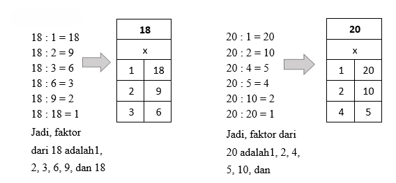
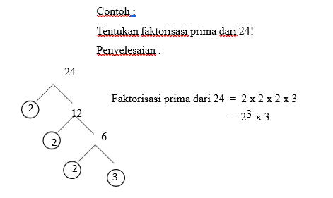
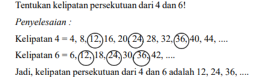
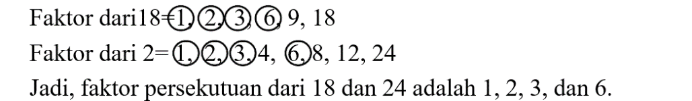
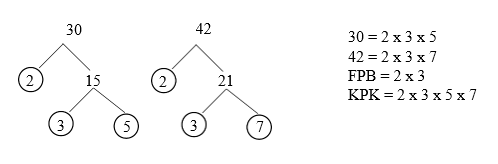
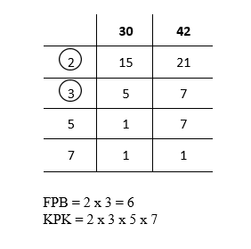

Kelipatan dari suatu bilangan adalah hasil perkalian bilangan tersebut dengan bilangan asli
Contoh:
Penyelesaian :
1 x 4 = 4
2 x 4 = 4 + 4 = 8
3 x 4 = 4 + 4 + 4 = 12
4x 4 = 4 + 4 + 4 + 4 = 16, dan seterusnya.
Jadi, kelipatan dari 4 adalah 4,8,12,16,....
Faktor dari suatu bilangan adalah semua bilangan yang dapat membagi habis tanpa sisa bilangan tersebut. Misalnya kita punya bilangan 10, maka faktornya adalah 1, 2, 5, dan 10. Karena bilangan tersebut bisa membagi bilangan 10 sampai habis.
Contoh:
Penyelesaian :

Bilangan prima adalah bilangan yang mempunyai dua faktor, yaitu 1 dan bilangan itu sendiri. Contoh bilangan prima : 2, 3, 5, 7, 11, 13, ....
Bilangan 1 bukan bilangan prima karena 1 hanya mempunyai satu pembagi yaitu 1. Bilangan 9 bukan bilangan prima karena 9 mempunyai 3 faktor, yaitu 1, 3, dan 9.
Faktor prima adalah faktor suatu bilangan yang merupakan bilangan prima.
Contoh:
Faktorisasi prima adalah cara menyatakan suatu bilangan sebagai hasil kali bilangan prima. Koefesien suatu bilangan dapat ditentukan dengan menggunakan pohon faktor.
Contoh:
Penyelesaian :

Kelipatan persekutuan adalah kelipatan setara (konjungsi) dari dua bilangan atau lebih. Kelipatan persekutuan dapat ditentukan dengan cara menuliskan kelipatan setiap bilangan kemudian melingkari kelipatan bilangan yang sama (berhubungan).
Contoh:

Faktor persekutuan merupakan faktor yang sama ( bersekutu )
Contoh:
Penyelesaian :

Cara menentukan KPK dan FPB dapat dilakukan dengan pohon faktor atau teknik sengkedan :
Contoh:
Penyelesaian :
Menggunakan pohon faktor

Menggunakan teknik sengkedan :

*Lingkarilah bilangan prima yang membagi habis kedua bilangan.
Permasalahan sehari-hari yang berkaitan dengan KPK biasanya sering berisi tentang peristiwa yang terjadi secara bersamaan dan berulang, sedangkan Konsep FPB sangat berguna dalam menyelesaikan berbagai macam masalah sehari-hari, terutama yang berkaitan dengan pembagian yang merata.
Contoh Soal KPK:
Andi mengunjungi perpustakaan setiap 4 hari sekali, sedangkan Budi setiap 6 hari sekali. Jika mereka bertemu di perpustakaan pada hari Senin, pada hari apa mereka akan bertemu lagi di perpustakaan?
Penyelesaian :
4 = 4,8,12,16,20,24,…..
6 = 6,12,18,24,30,36,….
KPK dari 4 dan 6 adalah 12
“Jadi, Mereka akan bertemu lagi di perpustakaan pada hari sabtu”
Contoh Soal FPB:
Bu Ani memiliki 24 buah apel dan 36 buah jeruk. Bu Ani ingin membagi buah-buahan tersebut ke dalam beberapa keranjang dengan jumlah apel dan jeruk di setiap keranjang sama banyak. Berapa banyak keranjang yang dibutuhkan Bu Ani?